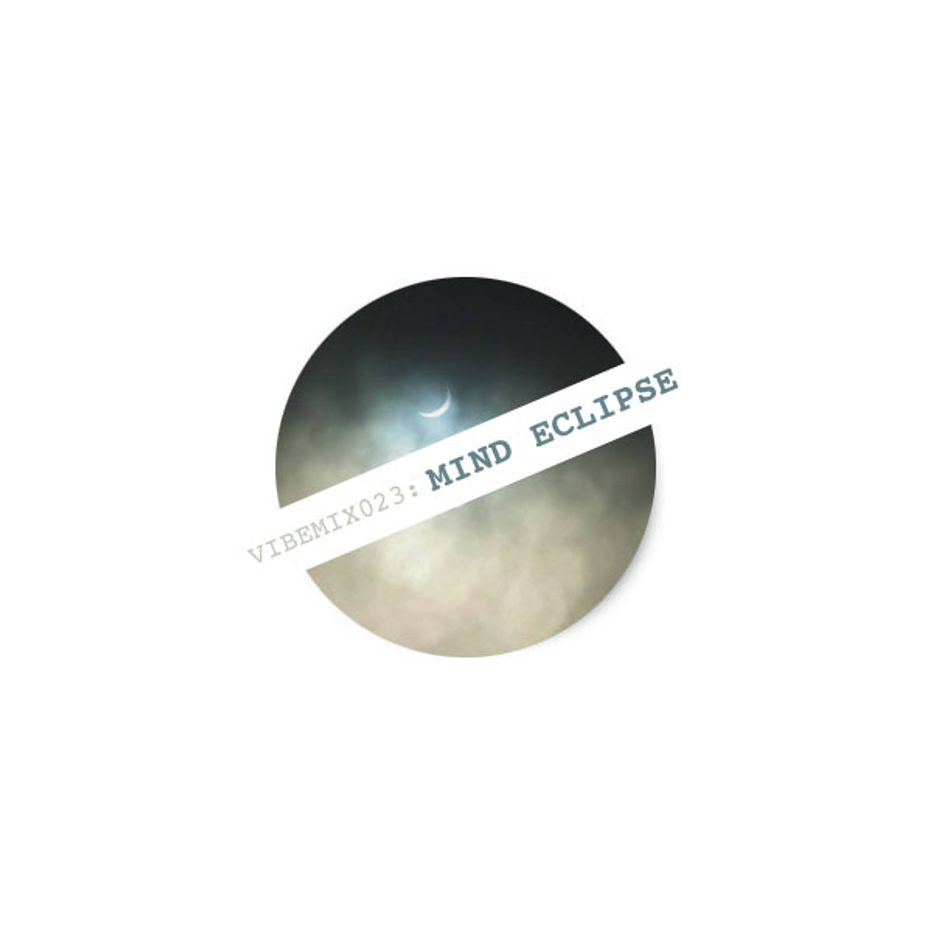

| VIBEMIX023: | MIND ECLIPSE | ||
|---|---|---|---|
| 01 | Angelzero & PL X | Reach Further | 00:00 |
| 02 | Liftin Spirits | Life Control | 05:27 |
| 03 | Ed Rush, Trace & Nico | Mad Different Methods | 11:21 |
| 04 | Makai | Friss Schxxxe (Remix) | 17:16 |
| 05 | Dillinja | Acid Trak | 22:44 |
| 06 | Shy FX | Mutant | 27:16 |
| 07 | Hokusai | Sculptures Hide | 32:00 |
| 08 | Makai | Black Belt 2nd Dan | 39:05 |
| 09 | Biostacis | Titanium | 44:32 |
| 10 | Shimon & Andy C | Mutation | 49:55 |
| 11 | Desired State | Mind Games | 55:43 |
| ℗ © 2015 | VIBERATIONS REC. |
|
 |
A second attempt to delve into the abyss of classical Dark Side Drum & Bass. |